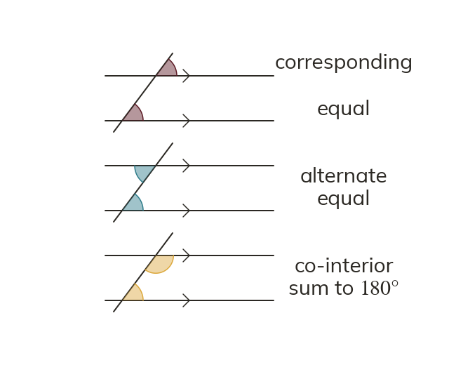
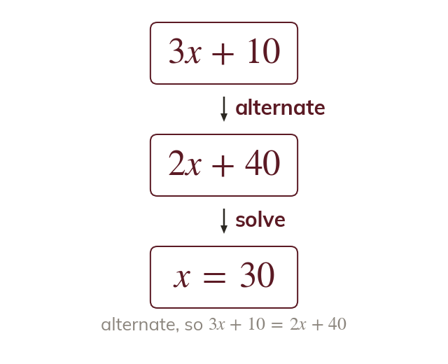
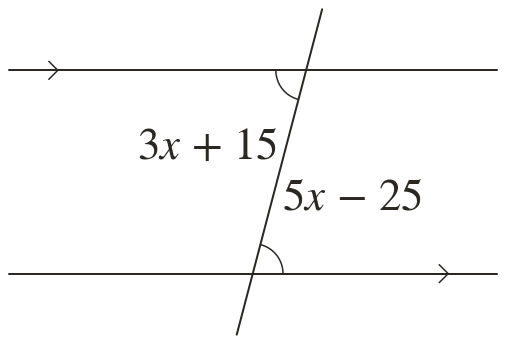
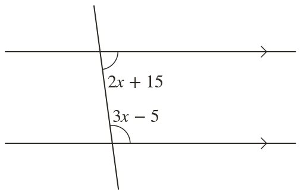
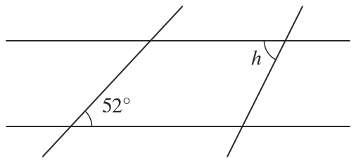
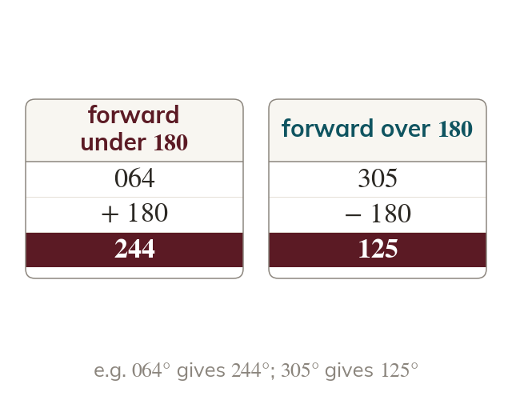

Three pairs, two rules
Across parallel lines, corresponding and alternate angles are equal. Co-interior angles sum to
Where a transversal crosses parallel lines, corresponding and alternate angles are equal. Co-interior angles sum to
Pilots, sailors and surveyors navigate with bearings, and every bearings diagram is a parallel-lines diagram in disguise. Today: angle chains with parallel lines, and the North lines that make bearings work.
Work down the page at your own pace. Write every answer in your book first, then click to check it.
Read each card, then follow the worked examples one step at a time.

Across parallel lines, corresponding and alternate angles are equal. Co-interior angles sum to

Harder diagrams chain two or more facts. With expressions, each fact becomes an equation.


Pick an answer. If it's wrong, the feedback tells you which mistake it was.

Read each card, then follow the worked examples one step at a time.

A back bearing differs by Add below and subtract above it.
North lines at different points are parallel. So parallel-line facts find bearings without measuring.
Pick an answer. If it's wrong, the feedback tells you which mistake it was.
Finished? Next lesson: 11H.7.1 Drawing and Measuring Tangents.
Log in, then search for a code to practise that skill.
Videos, worksheets and more on each part of this lesson.